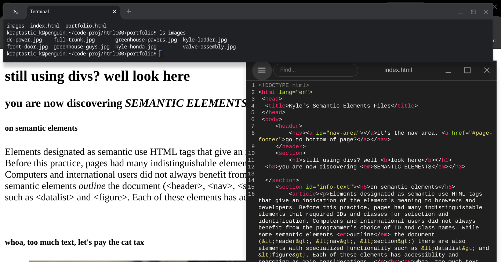
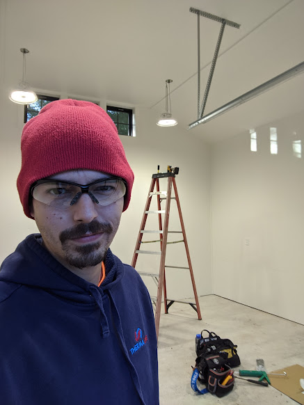
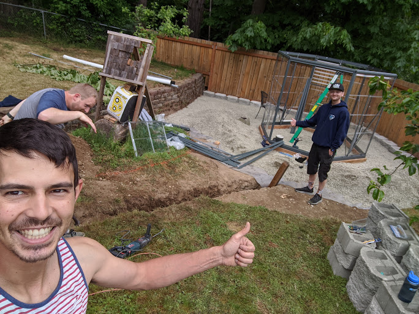
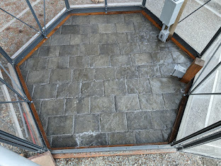
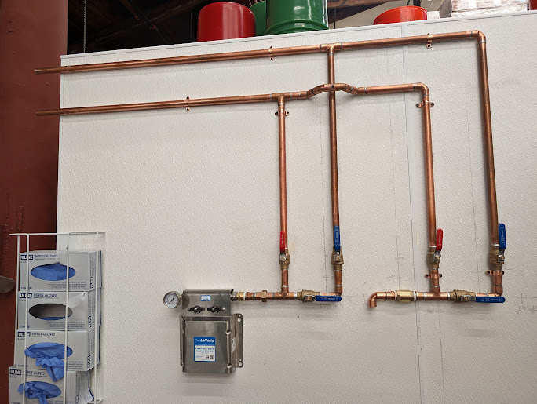
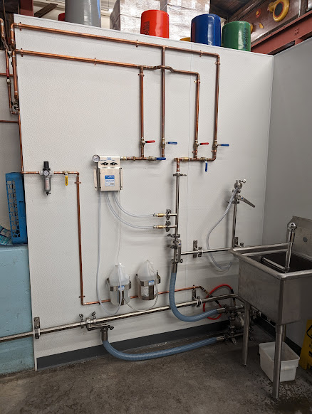

Knows enough to be dangerous to filesystems and open source projects
A little prompt from the professor at the beginning of the course, and we are all off to the races. Some of us are experiencing first times and others are returning to the constantly changing technologies that make up the modern internet. I had designed very basic websites before as a kid, but coming back to commit the code to GitHub and seeing the CSS ahead of us, that's got me excited.Check out the project at GitHub if you get a moment. My favorite part of this project was feeling more familiar and comfortable with Git and the Linux terminal.
Electrical work in new construction garage

Safe and professional installer of electrical devices
I helped install the wiring, outlets, switches, heating, and interior/exterior LED lighting for a private customer near Mt. Rainier. Under the supervision of a licensed 01 electrician, we pulled underground service to an outbuilding from the home load center into a sub panel. We roughed in 3 20 amp circuits for outlets (1 circuit on each wall having two duplex devices with a GFCI device inline), 1 20 amp circuit for the intense LED overhead lighting, 1 15 amp circuit for the exterior lighting, and a 30 amp circuit for an in-wall heater.The customer was coincidentally the person who had installed my home septic system before I bought the house, maybe 20 years ago.
Installation of greenhouse at home

Landscaping, garden, paver installation, with friends
Finishing touches on paver stone floor
My wife had to leave town for work, and I called my friends over to install a greenhouse as a surprise. We cut the sod back, dug a 24" deep trench for 60 amp electrical service and water service, then buried concrete blocks flush with the earth as a foundation. We anchored pressure resistant timber to the blocks, then assembled the greenhouse frame onto the timbers. My good friends helped move 5 yards of gravel from the driveway to the greenhouse area, as well as two pallets of concrete blocks. This helped us create a two-terrace raised bed system out of the excess soil and organic matter from the scraping. Finally, I cut the paver stones to size, then tamped and bedded them in sand. This was my first project of this type, but I have been told our install showed good planning and execution.I'd like to thank the Kogen Ninpo Dojo for helping with this install.
Copper pipe valving for food production facility

Roughing In
With recirculation pump and sanitizing chemicals
I have provided contracting for food production and restaurant industry as a fabricator before, performing stainless steel welding repairs. This customer asked me to come take care of a series of tasks including servicing air compressors, installing new bathroom fans, and finally, installing a valving system for a hand washing sink. their engineer was able to sketch on the wall and verify as I produced about 60 ft of sweated copper piping with a few dozen sweated joints.